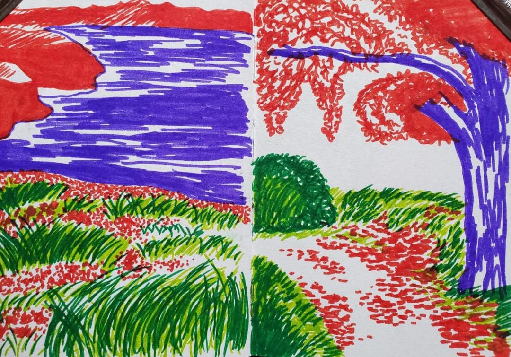
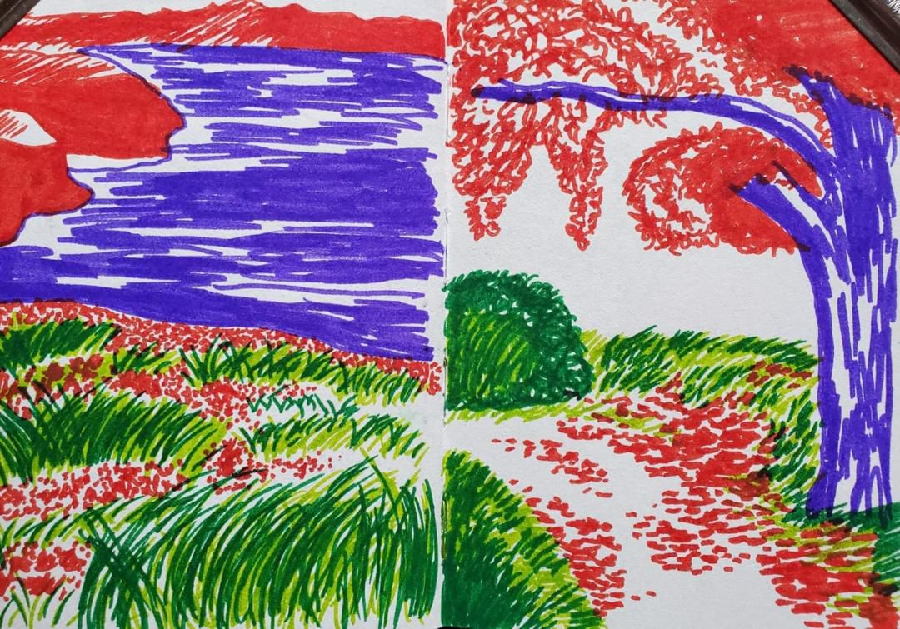
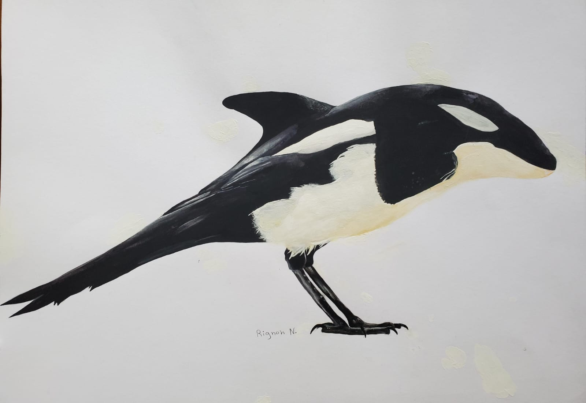
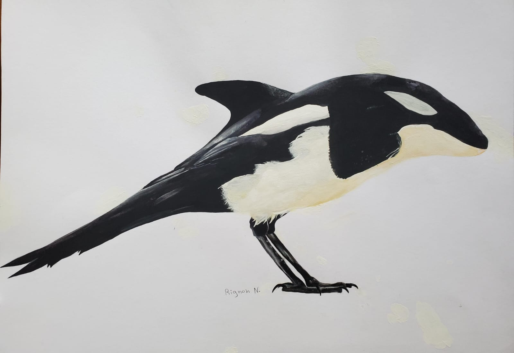
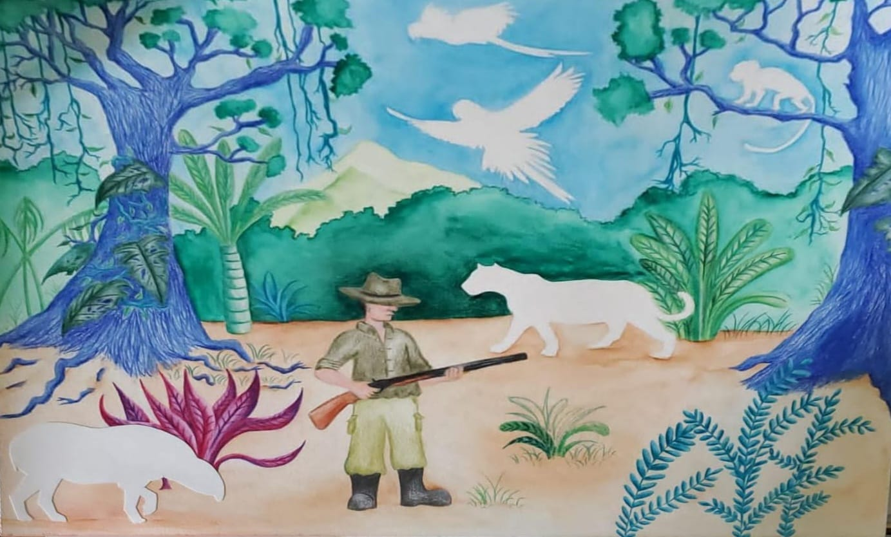
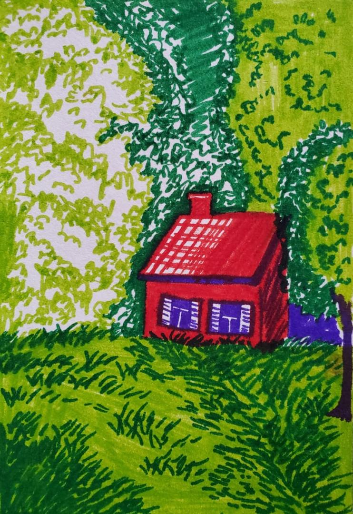
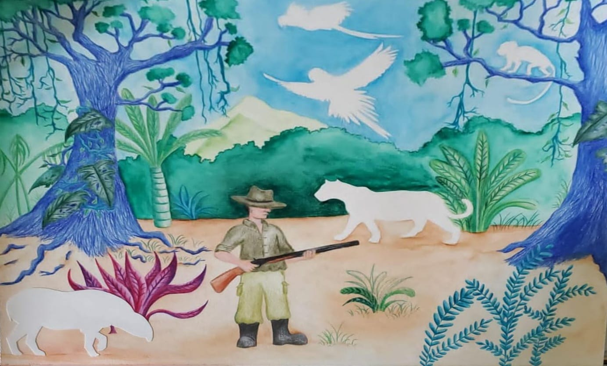
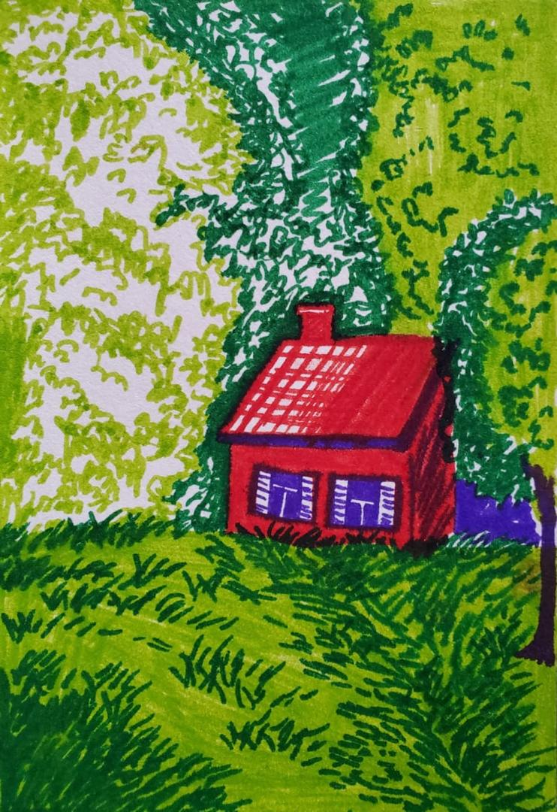

LA CATHARSIS
Plongez dans l’univers singulier de Natacha Rignon, où chaque œuvre est une fusion audacieuse.
Natacha Rignon est une artiste originaire de Guyane, passionnée par l’art visuel. À travers ses tableaux, elle explore des thèmes liés à la nature, la culture et les émotions humaines, en utilisant des techniques contemporaines pour créer des œuvres riches en couleurs et textures.
Événements à venir
Nous proposons des œuvres de Sérénité champêtre, d'élégance d'antan
 

Notre Galerie
Réalisme
 


Coloré
 



Black & White
Témoignages
"Ce fut un plaisir d’acheter de l’art chez vous et je continuerai à vous suivre! Je viens de recevoir l’œuvre et c’est vraiment un coup de cœur. Elle est vraiment fantastique et époustouflante! J’ai vraiment apprécié acheter sur Catharsis et je reviendrai afin d’acquérir de nouvelles œuvres."
– Madame Gomez
"J’ai récemment acheté un tableau de Natacha Rignon et je suis absolument ravi de mon acquisition. Son travail est d’une beauté et d’une profondeur exceptionnelles. Ce tableau ne se contente pas d’être une simple décoration, c’est une véritable œuvre d’art qui suscite des émotions à chaque regard."
– Paul Mendez